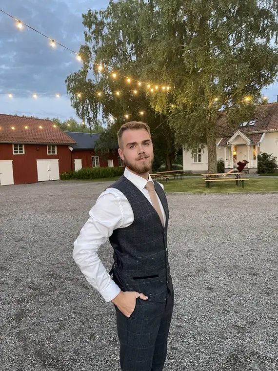
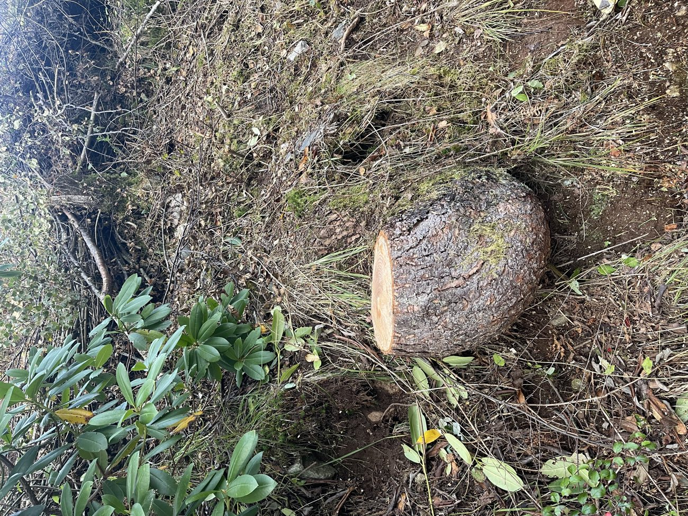

Hvem kommer?
Hei, jeg heter Krister. Det er meg du får.
BOTN Skogservice er en enmannsbedrift. Han som svarer på telefonen, han som kommer og ser på treet, og han som står der med saga, er samme mann.
Jeg liker praktisk arbeid og trives best når ting er på stell. Jobben skal gjøres skikkelig, det skal se ryddig ut underveis, og tomten skal være penere når jeg drar enn da jeg kom.
Det er du som kjenner tomten din. Jeg feller og fjerner det du ber om, og sier fra hvis jeg mener noe bør gjøres annerledes. Er jobben en jeg ikke bør ta, får du vite det også. Et ærlig råd er viktigere for meg enn å få oppdraget.
KristerKrister Dyrkolbotn, daglig leder og eneste ansatt
- Én mann
- Samme person fra første telefon til siste lass er kjørt bort.
- Skogkurs
- Dokumentert opplæring i felling, etter bransjestandard.
- 10 mill. kr
- Ansvarsforsikring. Skjer det noe med hus, gjerde eller bil, er det dekket.
Tjenester
Fra ett tre i hagen til en hel li med kratt
Fire ting gjør jeg mest av. Resten står under, og er du usikker på hva jobben din heter, holder det med et bilde.
-
Nº 01
Trefelling
Enkelttrær og trerekker der det er plass til å legge treet ned. Jeg planlegger fallretningen, sperrer av området og feller med retningshogg, så treet havner der det skal.
Gran, furu, bjørk, osp · Stubben kappes lavt
-
Nº 02
Krattrydding
Gjengrodde skråninger, bringebær- og tornekratt og selvsådd bjørk og osp. Jeg rydder helt ned med ryddesag og krattkniv, så du ser hva tomten faktisk består av.
Skråninger · Tomtegrenser · Utsiktsrydding
-
Nº 03
Ungskogpleie
Ungskog som får stå i fred blir tett, tynn og ustabil. Jeg går gjennom feltet med ryddesag, velger ut trærne som skal bli til noe, og tar vekk det som konkurrerer om lys og næring.
Avstandsregulering · Lauvrydding · For skogeiere og større tomter
Kan dekkes av skogfond → -
Nº 04
Klatring og seksjonsfelling
Trær som står for nær hus, gjerde eller nabotomt kan ikke legges ned i ett stykke. De tar jeg ovenfra, bit for bit, med klatre- og riggeutstyr, og firer seksjonene kontrollert ned til bakken.
Risikotrær · Trange tomter · Ingen fri fallplass
Og så det som hører med:
-
Kvisting og beskjæring
Oppstamming, fjerning av døde greiner og greiner som henger over tak, innkjørsel eller vei. Treet blir stående, men slipper gjennom lys.
-
Bortkjøring og ved
Kvist, stammer og kratt lastes på hengeren og kjøres til godkjent mottak. Vil du ha veden selv, kapper jeg stammene i de lengdene du ønsker og lar dem ligge.
-
StubbefresingKommer
Stubben freses ned under bakkenivå, så flaten kan brukes til plen, stein eller nyplanting. Til jeg har egen freser, kapper jeg stubben så lavt jeg kommer til.
-
FlishoggingKommer
Med egen flishugger kvernes kvist og greiner på stedet. Det gir færre lass å kjøre bort, og flisen kan du bruke som dekke i bed og på stier.
-
Hekk, spyling og småjobber
Jeg tar fortsatt hekk og beskjæring, høytrykkspyling og løvrydding, som i FjordFix-tiden. Se bilder i arkivet.
Står treet nær en strømlinje, må nettselskapet varsles før felling. Den kontakten tar vi sammen, og så planlegger jeg jobben etter det.
For skogeiere
Skogfondet kan ta mye av regningen for ungskogpleie
Har du solgt tømmer fra eiendommen, står det trolig penger på en skogfondskonto. Brukt på tiltak i skogen er 85 prosent av beløpet skattefritt.
Hva skogfond er
Når du selger tømmer, settes mellom 4 og 40 prosent av inntekten av på en konto som følger eiendommen. Pengene er dine, men kan bare brukes på investeringer i skogen.
Skattefordelen
Tar du ut skogfond til godkjente tiltak, som planting og ungskogpleie, regnes bare 15 prosent av beløpet som inntekt. Resten er skattefritt.
Tilskudd på toppen
Mange kommuner gir i tillegg tilskudd til ungskogpleie. Satsene varierer fra kommune til kommune og fra år til år, så spør skogbruksansvarlig hva som gjelder hos deg.
Jeg gjør jobben. Du får papirene du trenger.
Ungskogpleie er et tiltak skogfondet kan dekke. Når jeg er ferdig, får du en faktura som viser hva som er gjort og hvor, til å legge ved når du ber kommunen om utbetaling.
Det er skogbruksetaten i kommunen som avgjør hva skogfondet kan brukes til, så ta en prat med dem før vi starter. Ordningen gjelder tiltak i skog. Trefelling i hage og rydding rundt hus dekkes ikke.
Pengene er dine. De står bare og venter.
Du bestemmer
Hva som skal vekk. Og hva som blir.
Noen vil ha alt fjernet og kjørt bort. Andre vil ha veden, flisa eller en stubbe å sette kaffekoppen på. Jeg kutter og fjerner slik du vil ha det.
Veden
Kappet i den lengden du fyrer med og lagt der du vil ha den. Eller kjørt bort.
Kvisten
Lastet på hengeren og kjørt til godkjent mottak. Eller lagt igjen, om du har bruk for den.
Stubben
Kappet så lavt jeg kommer til. Eller satt igjen i den høyden du ønsker.

Fallsone
Kan treet felles i ett stykke?
Et tre som felles fra bakken trenger fri plass som er lengre enn treet er høyt. Er det ikke plass, tas det ned i seksjoner. Prøv med ditt eget tre.
Seksjonsfelling
Treet er høyere enn den frie plassen. Det tas ned ovenfra i seksjoner som fires kontrollert ned.
- Fri plass som trengs (høyde + 25 %)
- 22,5 m
- Sperret område for folk (2 × høyde)
- 36 m
Slik går det for seg
Fra gjengrodd til ferdig ryddet
-
Steg 1
Bilder eller befaring
Send bilder av tomten, eller avtal at jeg kommer innom. Jeg ser på trærne, adkomsten og hvor ting kan falle.
-
Steg 2
Tydelig tilbud
Du får et skriftlig tilbud på hva som felles, hvordan det gjøres og hva som kjøres bort.
-
Steg 3
Felling og rydding
Arbeidsområdet sperres av, og jobben gjøres fra bakken eller fra treet med riktig utstyr.
-
Steg 4
Ryddet og bortkjørt
Jeg rydder etter meg og kjører bort det du ikke vil ha. Veden blir liggende om du ønsker det.

Verktøyet er halve jobben
- Motorsag
- Felling, kapping og kvisting av stammer
- Klatre- og riggeutstyr
- Seksjonsfelling av risikotrær og trær uten fri fallplass
- Ryddesag · krattkniv
- Kratt, oppslag, ungskog og gjengrodde skråninger
- Transportrigg
- Bortkjøring av kvist, kratt og stammer. Ett tonn nyttelast
- Hekksaks · grensaks
- Beskjæring, kvisting og formklipp
- Løvblåser
- Opprydding når jobben er ferdig
Ærlig talt
Det folk lurer på før de ringer
Er du arborist?
Nei, og jeg kaller meg ikke det. Arborist er en egen fagutdanning med sertifisering. Det jeg har, er dokumentert opplæring i felling gjennom Skogkurs, klatre- og riggeutstyr, og erfaring med å ta ned trær på trange tomter.
Skal et tre vurderes for sykdom, eller bevares og beskjæres faglig over mange år, anbefaler jeg en sertifisert arborist. Skal det ned, kan du ringe meg.
Hva koster det?
Det kommer an på treet, plassen rundt og hvor mye som skal kjøres bort. Send et par bilder, så får du et skriftlig tilbud før jeg starter. Er det vanskelig å se på bilder, kommer jeg og ser på det.
Treet står nær en strømlinje. Hva da?
Da skal nettselskapet varsles før noen setter saga i det. Den kontakten tar vi sammen, og jobben planlegges etter det de sier.
Kan jeg beholde veden?
Ja. Si hvilken lengde du fyrer med, så kapper jeg stammene og legger dem der du vil ha dem. Det du ikke vil ha, kjører jeg bort.
Hvor tar du oppdrag?
Alver, Knarvik og resten av Nordhordland, Osterøy og Bergen. Står tomten litt utenfor, ta kontakt likevel.
Tar du fortsatt hekk og høytrykkspyling?
Ja. Hekk og beskjæring, høytrykkspyling, løvrydding og småjobber rundt huset tar jeg som før. Jeg tar ikke arbeid som krever autorisert fagforetak, som fast el-installasjon eller rør i våtrom. Da sier jeg fra og anbefaler riktig fagperson.
Merket
Én form, fire måter å se den på
Hva det forestiller, kommer an på hvem som ser.
- Moloen
- Vern. Det som står imot kreftene rundt seg.
- Fjellet
- Vestlandet. Landskapet og det som varer.
- Øksa
- Endring. Å forme landskapet og gripe inn der det trengs.
- Fjorden
- Samband. Veien mellom fjellene som har bundet folk og ideer sammen.
Ser du bare et fjell, holder det lenge.
Arkiv
Før og etter
Jeg er flinkere til å rydde enn til å ta bilder underveis. Men noen har jeg, og flere kommer etter hvert som trærne går ned.
Se arkivet Før
Før
 Etter
Etter
Granhekk ved innkjørselen, kappet kraftig ned og rettet opp.
Kontakt
Send gjerne bilder av prosjektet
Et par bilder av trærne eller flaten det gjelder, og hvor det står i forhold til huset, er ofte nok til at jeg kan si hva jobben innebærer. Eller ring. Det er meg som tar telefonen.
Her holder jeg til
Erstadvegen 36, 5911 Alversund
Åpne i Google Maps →
Kart fra Google
Jeg laster ikke kartet automatisk. Velger du å laste det, blir disse opplysningene delt med Google:
- IP-adressen din
- nettleser, enhet og skjermstørrelse
- hvilken nettside du kom fra
Google kan lagre informasjon i nettleseren din, og overføre opplysningene til land utenfor EØS.